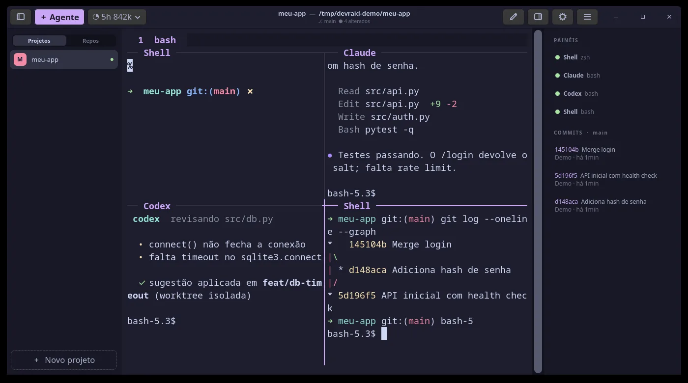
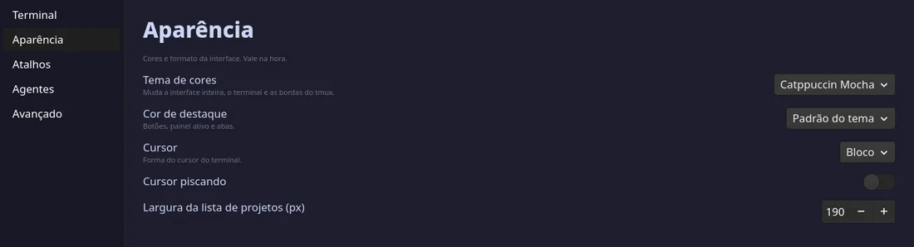

The /dev/raid guide
Everything you need to go from zero to several AI agents working in parallel, each project in its own place.
Installation
/dev/raid is a Python desktop app (GTK4 + VTE) with tmux under the hood. It runs on Linux, under Wayland (sway) or X11.
Dependencies
| Requires | What for |
|---|---|
| Python 3.11+, GTK4, VTE 3.91, PyGObject | the window and the terminals |
tmux | persistent sessions (the app runs its own server, separate from your tmux) |
gh (GitHub CLI) | repo list, CI and PRs. The app reuses your existing gh auth login |
libsecret (secret-tool) and a keyring | per-project secrets |
mosh (optional) | remote projects; falls back to ssh without it |
# Arch
sudo pacman -S python-gobject gtk4 vte4 tmux github-cli libsecret gnome-keyring mosh noto-fonts
# Fedora
sudo dnf install python3-gobject gtk4 vte291-gtk4 tmux gh libsecret moshOne-line install
The quickest way. It detects your distro (Arch, Fedora, Debian/Ubuntu), installs any missing dependencies (asking before it uses sudo) and installs /dev/raid into ~/.local, no root required:
curl -fsSL https://kleber-code.github.io/dev-raid/install.sh | shor, with wget:
wget -qO- https://kleber-code.github.io/dev-raid/install.sh | shThen:
gh auth login # once
devraid install # registers hooks and MCP in Claude Code and Codex
devraid # opens the appRunning a script from the internet means trusting it. Read it first with curl -fsSL https://kleber-code.github.io/dev-raid/install.sh | less (about 130 lines) or pin a version: curl -fsSL …/install.sh | DEVRAID_REF=v0.2.0 sh.
| Variable / option | Effect |
|---|---|
DEVRAID_REF=v0.2.0 | installs that version (tag or branch). Default: the latest release; if there is none, main |
DEVRAID_PREFIX=/usr/local | where to install (default ~/.local; anywhere else needs sudo) |
DEVRAID_YES=1 | don't ask before installing system dependencies |
sh -s -- --uninstall | removes /dev/raid (your data in ~/.raid_point is kept) |
Packages
| Where | Status |
|---|---|
| Arch / AUR | PKGBUILD (and devraid-git) ready in packaging/aur/. Not yet published to the AUR. Meanwhile: git clone + makepkg -si inside packaging/aur, or use the one-line install. |
| Fedora / RPM | devraid.spec in packaging/rpm/ (built and tested). No repository (COPR) yet. |
| pip / Flatpak | not offered: the app needs tmux, gh and the system keyring, which a sandboxed package can't see. |
Manual install
git clone https://github.com/kleber-code/dev-raid.git
cd dev-raid
sudo make install PREFIX=/usr/local # or: make install PREFIX=$HOME/.local
make uninstall PREFIX=/usr/localThis copies everything into PREFIX/lib/devraid and creates devraid and raidpoint in PREFIX/bin, plus the icon and the menu entry. For development, run straight from the clone: python3 bin/devraid.
Names. The app is devraid: with no arguments it opens the window, and with a verb it's the command line (devraid ls, devraid mcp…). The raidpoint command still exists as a legacy alias. The data folder ~/.raid_point and the raidpoint MCP server keep their names on purpose, so existing installs and configs keep working.
First steps
- Open
devraid. Click ＋ New project and pick a folder that is a git repository (or choose GitHub repository… to clone one). - Click ＋ Agent (or Ctrl+D) and choose Agent: Claude. A pane opens with the agent running in the project folder.
- Open another agent next to it — say Agent: Codex in isolated worktree — and split the screen with Alt+\ or Alt+-.
- When an agent is done, press Ctrl+G to see what changed and commit.
- Close the window. The agents keep running. Open the app again and everything is still there.

Concepts
| Term | What it is |
|---|---|
| Project | A git folder. Each project has its own tmux session, with its panes and tabs. |
| Pane | A terminal inside the session. Its name shows on the border (Claude, Codex, Shell…). |
| Tab | A tmux “window”: a set of panes. Switch with Alt+1…9. |
| Agent | A program preset (name + command), such as claude or codex. You edit the list in Settings. |
| Worktree | A working copy of the repository in another folder and branch, so an agent can work without conflicts. |
Projects and repos
The sidebar has two tabs. To add a project, use ＋ New project: a GitHub repository (account and organizations via gh; it is cloned into ~/.raid_point/workspaces/<repo>), a local folder or an SSH/mosh server.
- Projects — what you're working on. A green dot means the session is alive. A badge shows the agents' state:
!needs attention,…working,✓done,✗failed. - Sessions — the live tmux sessions. The dot shows green (open in a window), yellow (running in the background) or grey (idle: only shells). Each row shows tabs, what is running and how long ago. ✕ kills a session (it warns if something is still running); Clean up… lists the idle ones so you pick what to kill; an orphan session (no project) is adopted as a project with a click.
Projects must be git repositories: that's what makes worktrees, diffs and PRs possible. To rename or remove a project, right-click it (or F2 / Delete). The app asks first and closes that project's terminals; the folder and its files are not deleted.
The window title shows the branch, how many files are modified, the open PR and the state of the CI checks.
Panes and layouts
Splitting, moving and closing panes is handled by tmux, so it works in any project and survives closing the app.
| Action | Shortcut |
|---|---|
| Split side by side / below | Alt+\ / Alt+- |
| Move focus between panes | Alt+arrows |
| Swap pane position | Alt+Shift+arrows |
| Zoom pane (full screen) | Alt+z |
| Close pane (asks first) | Alt+w |
| New tab | Alt+t |
| Go to tab N | Alt+1…9 |
| Previous / next tab | Ctrl+PageUp / PageDown |
The automatic layout for new panes is picked in the palette (Layout: …): columns, rows, grid, main left or main top. The tmux prefix is Ctrl+a.
To type into all panes at once, use Panes: type in all in the palette. The actions button turns yellow while it's on.
The right mouse button opens an app menu (not tmux's, nor the one from the program inside the terminal), so it works in any pane: copy, paste, open link, split, zoom, move to new tab and close pane.
Agents and worktrees
Open an agent with the ＋ Agent button or from the palette. The built-in presets are Claude, Codex, Aider, Ollama and Shell (see Settings to edit them).
Agents start inside an interactive login shell, so CLIs installed in ~/.local/bin, through nvm and the like are found even when /dev/raid is launched from the desktop menu. When the agent exits, the pane drops to a shell instead of closing.
Isolated worktree
Every preset with a command also has an “in isolated worktree” variant. It creates a working copy of the repository and opens the agent there:
- folder:
<repo>-wt/<agent>-N(next to the repository) - branch:
agent/<agent>-N
That way two agents can edit the same project without conflicts, and you review and merge each branch afterwards. If the worktree can't be created (for example, a repository with no commits yet), /dev/raid won't open the agent without isolation: it shows the error instead of running in the main directory by mistake.
Orchestration
There are three levels, from most manual to most automatic.
1. Parallel task
In the palette (Ctrl+D), choose Orchestrate: parallel task…. Write the task once, say how many copies of each agent you want and launch. Each agent opens in its own worktree with the task already handed over; afterwards you compare the results in Changes.

- Several copies of the same agent are useful for comparing approaches (“three Claudes, I'll pick the best”).
- Claude, Codex, Gemini and similar get the task as a startup argument (reliable). Other agents open empty and the task is typed into them.
- If a worktree fails (for example, a repository with no commits), that agent is not opened and the error is listed; the others go ahead.
- Ctrl+Enter launches; Esc cancels.
2. Orchestrator agent
Orchestrate: open orchestrator agent opens a Claude already instructed to act as the coordinator. You describe the goal and it, on its own:
- splits the work into independent parts;
- opens one agent per part, in worktrees, through the MCP server (
spawn_agentwithprompt), choosing Claude or Codex and checkingusageso it doesn't blow through your quota; - follows progress with
list_agentsandread_output; - at the end, summarizes what each one did and lists the
agent/*branches for you to review.
It never merges or pushes on its own. Requires the MCP server to be registered (devraid install).
3. Claude Code's own subagents
Claude Code already spawns subagents by itself. The agents panel shows each one with its status (via hooks) and the transcript on click. This works for any session, orchestrated or not.
All three keep everything visible in your panes: you always see who is running, in which folder and on which branch.
Actions (Ctrl+D)
The actions palette is the fastest way to do anything. Type part of the name (accents don't matter), use ↑ ↓ and Enter. Esc closes it.

- Agent: … — opens an agent (with or without a worktree)
- Pane: … — new shell, new tab, zoom, close
- Layout: … — columns, rows, grid…
- Changes, Agents panel, Project list, Secrets
- Text: … — bigger, smaller, normal size
- Project: … — switch to another project (or remove the current one)
- Check for updates, Restart /dev/raid (see Updates)
- Settings
Ctrl+D is the terminal's “end of input”. Since the app captures this shortcut, it never reaches the shell or the agents: to leave a shell use exit, and /exit in Claude Code. If you'd rather keep the terminal's Ctrl+D, change the shortcut in Settings → Shortcuts.
Changes and commits
Ctrl+G (or the pencil button in the header) opens the review window.

- The selector at the top picks the folder: the main project or any agent's worktree.
- The list shows every modified file:
~modified,+new,−deleted,→renamed. - The colored diff appears alongside. New files show up in full as additions.
- Revert this file discards the changes to that file only, after asking for confirmation. It can't be undone.
- Commit all stages every file in the list and commits with your message. It does not
push.
Not available for remote projects yet.
Agents panel
Ctrl+J shows, on the right:
- The project's panes, with what's running in each one and whether it's active or idle.
- Claude Code AI sessions and subagents, with status. Clicking opens the transcript in a pane.
- Recent commits on the current branch.
- GitHub CI / Actions for the branch.
- Recent project memory.
Sessions and subagents come from Claude Code hooks (installed by devraid install). Codex and Aider don't emit these events, so they only show up as panes.
When an agent is waiting for you, the sidebar shows the ! badge and the app sends a desktop notification; clicking it opens the project.
Remote servers
In ＋ New project → SSH / mosh server…, pick a host from your ~/.ssh/config. /dev/raid connects with mosh (or ssh, if mosh isn't available) and tmux runs on the server: if your connection drops or your laptop goes to sleep, the work carries on. Remote projects show a blue dot.
If the connection drops right after opening, the app shows a warning and retries in 5 seconds.
Copy, paste and links
| Action | How |
|---|---|
| Copy | Ctrl+Shift+C or Ctrl+Insert |
| Paste | Ctrl+Shift+V or Shift+Insert |
| Copy with the mouse | drag inside tmux: the text goes straight to the clipboard (and the primary selection) |
| Native selection | Shift+drag |
| Open link | Ctrl+click (URLs and terminal hyperlinks) |
Plan usage
The ◔ usage button in the header summarizes Claude Code consumption: tokens over the last 5 hours, 24 hours and 7 days, per project and model, read from the local transcripts.
To see the actual plan percentage (the same 5-hour and weekly limits Claude shows), enable the statusLine:
devraid install-statuslineIt only installs itself if you don't have a statusLine configured yet. The app warns you when a limit is about to run out.
Codex
Codex writes its own limits to its logs (~/.codex/sessions), so there's nothing to set up. The panel shows the 5-hour and weekly percentage, when it resets, the plan type and the credit balance (if the account has one). The header button then reads, for example, ◔ 5h 12% · cx 5%. The data comes from your last Codex use: if you haven't used it in a while, the window has already reset and it won't show up.
The CLI shows the same: devraid usage. The MCP server exposes claude_plan and codex_plan in the usage tool, so the orchestrator can decide how many agents to launch.
Settings
Ctrl+, or the ⚙ button in the header. Everything is saved instantly — there's no “save” button.

Terminal
- Font — lists only the installed monospace fonts, with search. A sample previews your choice.
- Font size (pt) and zoom (50% to 300%, also via Ctrl++, Ctrl+−, Ctrl+0 and Ctrl+scroll).
- Zoom step — how much each Ctrl++/− changes.
Appearance

- Color theme — Catppuccin Mocha, Tokyo Night, Gruvbox Dark or Nord. Changes the whole interface, the terminal and the tmux borders and tabs.
- Accent color — Theme default, Blue, Green, Yellow or Red.
- Cursor — Block, Bar or Underline, blinking or not.
- Project list width — from 140 to 360 px.
Shortcuts
Click a shortcut and press the new combination. Backspace removes the shortcut, Esc cancels. If the combination already belongs to another action, the app warns you instead of overwriting it. The fixed tmux shortcuts are listed below, for reference only.
Agents
Add, rename or remove presets. Each one is a name and a command (empty = just a shell). Any CLI works: claude, codex, aider, ollama run llama3, gemini… The list feeds the ＋ Agent button and the palette.
Advanced
The Automatic updates switch (see Updates) and where the app's files live, with a button to open each one.
Editing by hand
The file is ~/.raid_point/config.toml. Missing keys use the defaults. If the file is invalid, the app warns in the terminal and falls back to the defaults.
[terminal]
font = "Noto Sans Mono 11"
zoom_step = 0.1
theme = "Catppuccin Mocha"
accent = "Theme default"
cursor = "Block"
cursor_blink = false
[window]
sidebar_width = 190
[updates]
auto = true # false turns off automatic updates
[keys] # GTK format; "" disables
palette = "<Control>d"
settings = "<Control>comma"
changes = "<Control>g"
agents_panel = "<Control>j"
sidebar = "<Control>b"
zoom_in = "<Control>plus"
zoom_out = "<Control>minus"
zoom_reset = "<Control>0"
copy = "<Control><Shift>c"
paste = "<Control><Shift>v"Shortcuts
In the app
| Action | Default |
|---|---|
| Actions (palette) | Ctrl+D |
| Settings | Ctrl+, |
| Changes / diff / commit | Ctrl+G |
| Agents panel | Ctrl+J |
| Project list | Ctrl+B |
| Text bigger / smaller / normal | Ctrl++ / Ctrl+− / Ctrl+0 |
| Copy / paste | Ctrl+Shift+C / V |
All of these can be changed in Settings.
Panes (tmux)
See the table in Panes and layouts. These are fixed and work in every project. They live in ~/.raid_point/tmux.conf if you want to change them.
The tmux shortcuts use Alt on purpose, so they don't steal keys from the shell and the agents (Ctrl+… belongs to them). We avoid Alt+Enter and Alt+b/f because Claude Code and readline use them.
Updates
/dev/raid keeps itself up to date. Every few hours the app checks for a new version; what happens next depends on how it was installed:
| Installed via | Automatic update |
|---|---|
| Git checkout | fast-forwards to the new commits — never over local changes |
One-line installer (curl | sh) | reinstalls the latest GitHub release in the same prefix |
| Distro package (AUR / RPM) | left to your package manager |
To update by hand, run devraid update (or raidpoint update); devraid update --check only checks. In the palette, Check for updates does the same, and Restart /dev/raid applies an update — your terminals survive the restart because tmux runs its own server.
To turn automatic updates off, use Settings → Advanced → Automatic updates, or set auto = false under [updates] in ~/.raid_point/config.toml.
Sway / i3
The window manager handles windows; /dev/raid handles projects and agents. The app's app_id is br.com.satela.DevRaid:
# ~/.config/sway/config
for_window [app_id="br.com.satela.DevRaid"] move to workspace 2
assign [app_id="br.com.satela.DevRaid"] workspace 2MCP server
devraid mcp is an MCP server (stdio) that devraid install registers in Claude Code and Codex. With it, the agents themselves can drive the environment:
| Tool | What it does |
|---|---|
list_projects, list_repos, open_repo | projects and GitHub repos; clone and register |
list_agents, spawn_agent | list panes and open an agent (with worktree=true to isolate it) |
send_message, read_output | write to an agent pane and read its last lines (secrets masked) |
usage, ci_status | token usage and CI status |
memory_add, memory_search, memory_recent | project memory |
secret_names, run_with_secrets | secret names, and running a command with them after your approval |
This lets an “orchestrator” agent open three agents in different worktrees, send each one a task and read their output — all visible in your panes.
Memory
Each project has a memory stored as markdown files, with full-text search (SQLite FTS5). When a Claude Code session starts, the project memory goes into its context. Agents write and query it through MCP; you, through the CLI:
devraid mem add my-app "we decided to use sqlite instead of postgres"
devraid mem search my-app sqlite
devraid mem recent my-app
devraid mem reindexThe project name is the second argument (as shown by devraid ls). Only devraid mem recent, with no arguments, figures out the project from your current folder. See the security limits: memory is read by the agents, so treat whatever gets written there as untrusted.
Secrets
Per-project API keys and passwords, stored in the system keyring (libsecret). Agents only see the names.
- Add them from the project menu (Secrets…) or the CLI:
devraid secret set my-app STRIPE_KEY. - The agent asks to run a command using the secret (
run_with_secrets). - The app shows an approval dialog with the command and the project.
- If you approve, the value goes only into that command's environment, and the output comes back with the value masked.
Read the limits below. This protects against use through the MCP tools; it is not a barrier against an agent that has shell access.
Security and limits
send_messageonly writes directly into agent panes (opened by the app, named after a preset other than Shell). Any other pane — shell, ssh, python — asks for your approval.- The MCP tools never return the value of a secret.
run_with_secretsonly runs after your approval and masks the output (only the exact value, not encoded versions of it). - An agent with a shell, running as your user, could in theory read the keyring directly (
secret-tool) or edit the approval files. For a real barrier, run agents as a different user or in a sandbox. - Project memory goes into the context of new sessions: whatever agents write there should be treated as untrusted.
- Alerts for secrets leaking into logs: not implemented yet.
- The app uses your already authenticated
gh; it doesn't store GitHub tokens.
Command line
Everything is devraid <command> (the legacy raidpoint <command> works the same).
| Command | What it does |
|---|---|
devraid | opens the app |
devraid --version | shows the version |
devraid ls | lists projects |
devraid add <name> [dir] | registers a project (must be a git repository) |
devraid rm <name> | removes the project from the list (doesn't end the session or delete the folder) |
devraid open <project> | opens/attaches to the project in the terminal (tmux) |
devraid kill <name> / stop | ends a project's tmux session / the whole tmux server |
devraid repos / open-repo <owner/repo> | GitHub repos; clone and register |
devraid mem … / secret … | memory and secrets |
devraid usage | token usage (5h / 24h / 7d, per project) |
devraid events / transcript <file> [-f] | latest agent events; view a transcript |
devraid update [--check] | updates /dev/raid now (or only checks for a new version) |
devraid install | registers hooks and MCP in Claude Code and Codex (backs up first) |
devraid install-statusline | enables the statusLine to show the plan % |
Files and variables
| Path | Contents |
|---|---|
~/.raid_point/config.toml | font, theme, shortcuts, updates |
~/.raid_point/agents.json | agent presets |
~/.raid_point/projects.json | projects (written atomically, with a lock) |
~/.raid_point/tmux.conf | the app's tmux configuration |
~/.raid_point/workspaces/ | repositories cloned from GitHub |
~/.raid_point/data/ | agent events, memory and approval requests |
| Variable | Effect |
|---|---|
RAIDPOINT_HOME | changes the data folder |
RAIDPOINT_SOCKET | tmux socket name (default tp) |
RAIDPOINT_APPID | changes the app ID (to run a second instance) |
RAIDPOINT_OPEN | project to open at startup |
RAIDPOINT_SHOW | changes, palette, settings or parallel: opens that window at startup |
Troubleshooting
The app won't open
Run devraid in a terminal to see the error. The most common cause is missing GTK4/VTE: check with python3 -c 'import gi; gi.require_version("Gtk","4.0"); gi.require_version("Vte","3.91")'.
I want to see the sessions in “real” tmux
The app runs its own tmux server: tmux -L tp ls (the tp socket). It doesn't interfere with your tmux.
The mouse doesn't select text
Inside tmux (with mouse mode on), dragging copies through tmux. For the terminal's native selection, hold Shift while dragging.
An agent doesn't show up in the agents panel
Sessions and subagents come from Claude Code hooks. Run devraid install and restart Claude Code. Codex and Aider only show up as panes.
An agent says “command not found”
Agents start in an interactive login shell, so anything on the PATH of your normal terminal should be found. If it still isn't, make sure the CLI's folder is added to PATH in your shell's login files (for example ~/.profile or ~/.zprofile), or put the full path in the preset's command.
I can't type Ctrl+D in the shell
It's the app's actions shortcut. Use exit or change the shortcut in Settings → Shortcuts.
The agent didn't open in a worktree
The repository needs at least one commit. The error message says why; the agent is never opened without isolation.
Development
The code is plain Python, no build step: bin/devraid (entry point), bin/devraid-gui (the interface), bin/raidpoint (CLI, hooks and MCP) and raidpoint/core.py (shared core).
- To test without touching your real setup:
RAIDPOINT_HOME=/tmp/x RAIDPOINT_SOCKET=test RAIDPOINT_APPID=dev.raidpoint.Test python3 bin/devraid-gui - tmux session names replace
.and:with_, and targets use=name:(exact match, not prefix match). - If
projects.jsonis unreadable, the app refuses to overwrite it.
Issues and pull requests are welcome at github.com/kleber-code/dev-raid. MIT license.